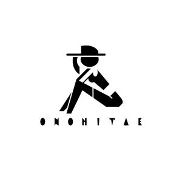

Overview
Purpose
My website is an online portfolio for modeling, and its purpose is to show future employers my skill and experience. The website will contain pictures from previous modeling work and other personal shoots.
Audience
The audience will be scouts from modeling agencies or other clients. The main target jobs are promotional or print modeling.
Branding
Website Logo
Style Guide
Color Palette
Palette URL: https://coolors.co/ffffff-656565-3b372c-000000| Primary | Secondary | Accent 1 | Accent 2 |
|---|---|---|---|
| [#ffffff] | [#000000] | [#656565] | rgb(226, 226, 226) |
Typography
Heading Font: Montserrat Bold
Paragraph Font: Montserrat Light
Normal paragraph example
ABOUT ME Welcome to my portfolio. I am a Nigerian model and influencer based in the United States and work mainly on commercial and promotional jobs. I fell in love with modeling from a very young age and am passionate about meeting creatives and bringing their ideas to life. I am based in Columbia, South Carolina, and I have modeled for local clothing shops in Idaho; however, I can travel to other destinations in the United States.
Colored paragraph example
MEASUREMENTS: Height: 5'7" (169 cm) Bust: 34.5" (87 cm) Waist: 26" (66 cm) Hips: 36.5" (92 cm) Clothing Size: 2 Shoes: US 8 Hair: Black Eyes: Dark Brown
Navigation
Site Map
Content
About
Welcome to my modeling portfolio. I am a Nigerian model and influencer based in the United States; I moved to South Carolina in 2015 and began modeling in college in 2022. I fell in love with modeling from a very young age and am passionate about meeting creatives and bringing their ideas to life. I have worked mainly on commercial and promotional jobs, but I am interested and open to working in other modeling categories. I try to live a healthy lifestyle and spend considerable time working out. I am currently in college and will graduate in December with a B.A. in History, after which I plan to attend law school in either New York, Massachusetts, or Virginia. I am based in Columbia, South Carolina, and I have modeled for local clothing shops in Idaho; however, I can travel to other destinations in the United States.
Images for the About page
Portfolio
Purpose: The goal of this page is to showcase select photographs from various modeling jobs and collections ranging from 2020 to 2022. Below is a description of the photographs with additional details and information for each set. Below the description is a section that features information about my measurements. Description: Photos one and two were taken for Love Olive Co. Spring collection '22 (Love Olive Co. is a small local clothing store in Idaho). These photos are portraits taken by Allison Quist (@allisonquistphoto) in Rexburg, Idaho. The third, fourth and fifth were part of a personal collection compiled from 2020 to 2022. These photos are also portraits taken in Idaho and South Carolina; they include both indoor and outdoor locations. MEASUREMENTS: Height: 5'7" (169 cm), Bust: 34.5" (87 cm), Waist: 26" (66 cm), Hips: 36.5" (92 cm), Clothing Size: 0 to 2, Shoes: US 8, Hair: Black, Eyes: Dark Brown.
Images for the Porfolio page
Contact
CONTACT: Let's chat! Tell me about your project. Form: Your Name Your Email Your Message (SEND) [POEM]: The Beauty Of A Woman The beauty of a woman isn't in the clothes she wears, The figure that she carries, or the way she combs her hair. The beauty of a woman must be seen from in her eyes; Because that's the doorway to her heart, the place where love resides. The beauty of a woman isn't in a facial mole; But true beauty in a woman, is reflected by her soul. It's the caring that she cares to give, the passion that she shows; And the beauty of a woman with passing years only grows. Audrey Hepburn
Images for the Contact page
Wireframes
Create three wireframes for your site. One for each page and list them here
About
[Any additional details about home that the wireframe does not make clear]
Portfolio
[Any additional details about page 2 that the wireframe does not make clear]
Contact
[Any additional details about page 3 that the wireframe does not make clear]